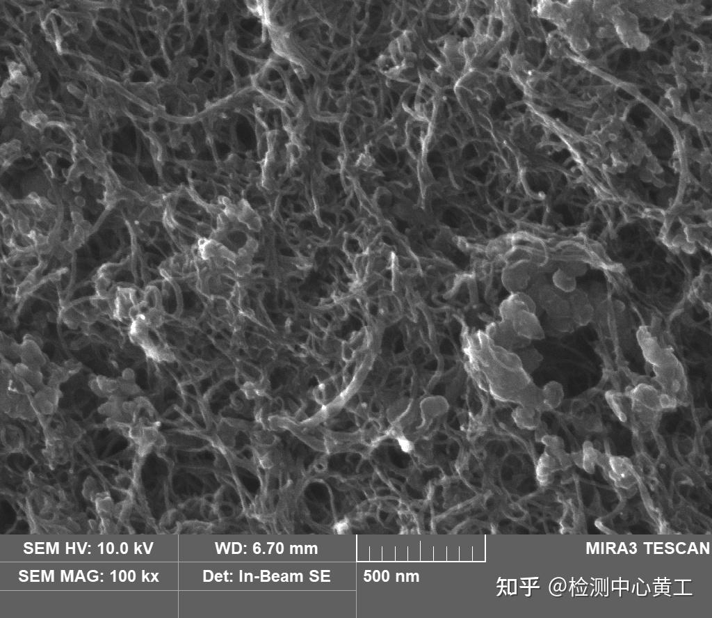

尽管太空电梯在理论上是可行的，但从概念到实现仍面临着一系列前所未有的工程和科学挑战。这些挑战涵盖了材料科学、结构工程、空间环境、经济成本等多个方面。每一个问题的解决都需要人类科技的重大突破。
挑战概述

太空电梯系统结构示意（风险分布贯穿全高度）
核心技术挑战
01
材料强度与大规模生产
难度等级：★★★★★

候选材料：碳纳米管显微镜图像（强度高但规模化制造困难）
问题描述：碳纳米管虽然理论上满足强度要求，但实际生产的材料强度只有理论值的10-60%，且长度远远不够。将纳米级材料编织成万公里级缆绳，需要突破性的制造技术。
当前瓶颈
高纯度碳纳米管年产量不足1吨，成本每克数百美元
所需目标
年产数千吨，成本降至每公斤数美元
预计突破时间
2030-2040年
可能的解决方案：
- 化学气相沉积（CVD）技术的工业化升级
- 开发新型催化剂，提高碳纳米管生长速度和质量
- 探索石墨烯-碳纳米管复合材料
- 研究仿生编织技术，提高宏观材料强度
02
太空碎片与微陨石威胁
难度等级：★★★★
问题描述：地球轨道上有超过1.3亿个太空碎片，大于10厘米的就有3.4万个。以每秒7-8公里的速度，即使米粒大小的碎片也能造成致命破坏。缆绳暴露在太空中数十年，碰撞几乎不可避免。
1.3亿+
轨道碎片总数
7-8 km/s
碎片相对速度
200-2000 km
最危险高度区
可能的解决方案：
- 部署雷达和光学监测系统，实时追踪大型碎片轨迹
- 缆绳配备小型推进器，可微调位置避让
- 采用多股冗余设计，单股损坏不影响整体
- 开发自修复材料，可自动愈合小型损伤
- 参与国际太空碎片清理计划，减少轨道垃圾
03
气象与大气影响
难度等级：★★★★

基站选址：赤道海上移动平台概念图（用于避开极端天气）
问题描述：缆绳的下半段穿过对流层和平流层，会遭受飓风、闪电、冰雹等极端天气的冲击。强风可能导致缆绳大幅摆动，闪电可能烧断材料，冰层积聚会增加重量。
飓风/台风
风速可达300 km/h，可能导致缆绳摆动超过百公里
闪电
电流可达20万安培，温度高达3万度，可能瞬间熔断缆绳
结冰
平流层水汽凝结，冰层可增加数吨额外重量
可能的解决方案：
- 地面基站选址在赤道海域，避开台风多发区
- 采用移动海上平台，可在恶劣天气来临前调整位置
- 缆绳设计避雷导体层，将电流安全导入海水
- 低层缆绳表面涂覆防冰涂层，或配备加热系统
- 建立气象预警系统，提前数天预测极端天气
04
振动与共振问题
难度等级：★★★★
问题描述：缆绳本身是一个超长弹性体，会产生复杂的振动模式。太阳引力、月球引力、地球非球形引力场、风力等都会激发振动。如果发生共振，振幅可能急剧放大，导致结构破坏。
太阳-月球引力潮汐
地球引力场不均匀
爬升器运动
大气层风力
温度变化引起的膨胀收缩
可能的解决方案：
- 精确计算缆绳的固有频率，避开危险共振区
- 在关键节点安装主动阻尼器，实时抑制振动
- 通过调整爬升器的速度和位置来调节系统频率
- 配重系统设计为可变质量，用于微调系统特性
05
空间辐射与材料老化
难度等级：★★★
问题描述：缆绳暴露在太空环境中，持续遭受紫外线、X射线、高能粒子（太阳风、宇宙射线）的轰击。这些辐射会破坏材料的分子键，导致强度逐渐下降。设计寿命至少50年，材料必须极其耐久。
可能的解决方案：
- 缆绳外层包覆抗辐射防护层（如聚合物涂层）
- 定期更换最外层防护材料（由爬升器机器人执行）
- 研发抗辐射的碳纳米管复合材料
- 设计冗余层，内层在外层降解后接管
06
建设成本与经济可行性
难度等级：★★★★

成本大头之一：同步轨道空间站/配重系统建设（示意渲染图）
问题描述：太空电梯的初始投资估计为200-400亿美元，相当于数十次大型火箭发射的总和。如此巨额投资需要多国合作和长期资金支持，投资回报周期可能长达数十年。
材料生产
空间站建设
地面基建
研发与测试
经济分析：
初期投资
200-400亿美元
运营成本
5-10亿美元/年
单次运输成本
200美元/公斤
投资回收期
15-25年
可能的解决方案：
- 建立国际财团，多国分担成本
- 分阶段建设，先建月球电梯验证技术
- 开发双用途技术，研发成果可应用于其他领域
- 寻求私营企业投资，如SpaceX、蓝色起源等
- 通过太空旅游、太空采矿等商业模式提前获利
07
国际法律与安全问题
难度等级：★★★
问题描述：太空电梯穿越多国领空和国际空域，涉及复杂的主权、安全、责任归属问题。如果发生事故（如缆绳断裂），坠落碎片可能波及多个国家，责任如何界定？
领空主权
事故责任
军事用途管控
环境影响评估
商业运营许可
知识产权
可能的解决方案：
- 制定国际太空电梯公约，明确各方权利义务
- 设立独立的国际监管机构
- 建立全球风险保险机制
- 选址在公海或国际合作区
- 引入严格的安全标准和定期检查制度
08
应急响应与故障处理
难度等级：★★★★
问题描述：如果缆绳断裂会发生什么？爬升器故障如何救援？如何保证乘客和货物的安全？这些极端情况都需要周密的应急预案。
⚠️ 缆绳断裂
后果：断点以下部分坠落，以上部分向外飞离
应对：
- 多股冗余设计，不会完全断裂
- 实时监测，提前发现裂纹并加固
- 地面设立坠落预警区，提前疏散
🚨 爬升器故障
后果：乘客被困在半空中，生命支持有限
应对：
- 备用动力系统和制动系统
- 应急逃生舱，可脱离缆绳独立返回
- 部署救援爬升器快速接驳
- 舱内储备至少30天生命支持
综合风险评估
影响程度
法律
辐射
应急
振动
气象
碎片
成本
材料
发生概率
低风险
中风险
高风险
极高风险
挑战不是不可能
尽管面临诸多挑战，但人类历史上的许多"不可能"都最终被实现了——从飞机到火箭，从原子能到互联网。太空电梯所需的每一项技术都在稳步发展，材料科学、自动化控制、空间技术都在快速进步。
更重要的是，太空电梯一旦建成，其带来的收益将是革命性的：太空运输成本降低99%，使太空旅游、太空采矿、太空制造、深空探索都变得经济可行。这将开启人类文明的新篇章。
乐观估计时间线：
- 2030年 - 碳纳米管材料达到工程要求
- 2035年 - 月球太空电梯技术验证
- 2045年 - 地球太空电梯试验系统
- 2050-2060年 - 首座商业太空电梯投入运营